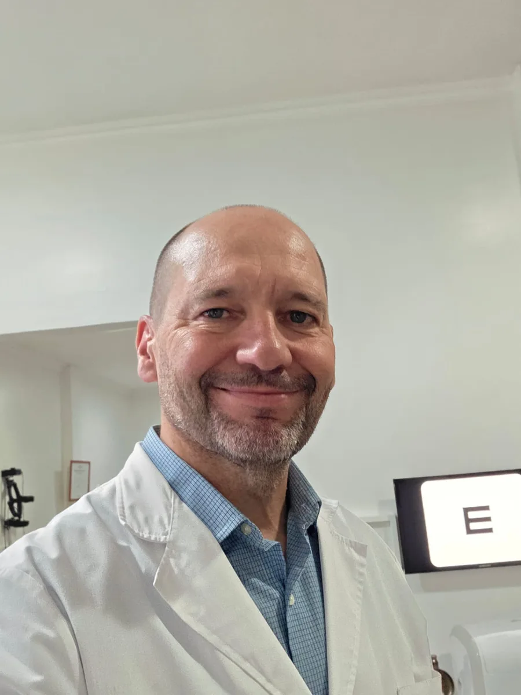

Dr. José Luis Meskinis
MÉDICO ESPECIALISTA JERARQUIZADO EN OFTALMOLOGÍA
1991, UNIVERSIDAD NACIONAL DE LA PLATA
Horarios
- Lunes
- 16:00 a 19:30
- Martes
- 9:30 a 12:00
- Miércoles
- 16:00 a 19:30
- Jueves
- 9:30 a 12:00
Ubicación
Calle 61 Nº 1708, entre 29 y 30
La Plata, Buenos Aires
Prácticas
- Examen oftalmológico
- Agudeza visual
- Campo visual computarizado
- Fondo de ojo
- Retinografía digital
- Tratamiento láser de retina y glaucoma
Coberturas
Atendemos obras sociales, prepagas y consultas particulares. Escribinos para confirmar si trabajamos con tu cobertura.
Consultar mi cobertura por WhatsApp